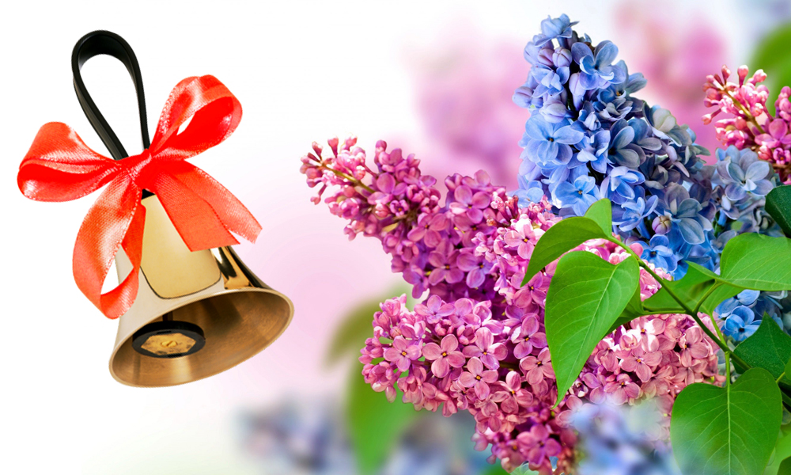

Noutăți
Mesaj de felicitare cu prilejul Ultimului sunet !
30/05/2023
Dragi elevi, stimaţi părinţi, onoraţi pedagogi!
A devenit o frumoasă tradiţie, ca în fiecare an, la sfîrşitul lunii mai, să marcăm în mod festiv
sărbătoarea „Ultimului sunet”. Fiecare matur: cadru didactic, părinte, bunel – retrăieşte
clipele despărţirii de frumoasa şi îndepărtata copilărie, pentru că luminoasa zi, cu flori şi
zîmbete, predispune la aceasta.
Sărbătoarea „Ultimului sunet” devine pentru toată societatea nu numai un prilej de satisfacţie,
ci şi un motiv de profundă meditare despre rolul educaţiei şi pedagogului în societate.
Dragi elevi!
În drumul parcurs prin labirinturile cunoaşterii călăuză fidelă vă este Măria Sa Cartea, care
este un nesecat izvor de înţelepciune. Şi dacă misiunea voastră este de a învăţa, de a acumula
cunoştinţe trainice, avem certitudinea că aţi reuşit, pentru că viitorul dictează antrenare
plenară la edificarea societăţii democratice, dar aceasta le reuşeşte celor puternici. Puternic
a fost, este şi va fi cel bine instruit, bine educat. Sărbătoarea ultimului sunet este pentru
voi deosebitul prilej de evaluare a succeselor obţinute pe parcursul acestui an şcolar, dar, în
acelaşi timp, şi un imbold de înălţare continuă.
Dragi absolvenţi!
Este nostalgic pentru voi ultimul clopoţel. El vă inundă sufletul de bucurie, de speranţe, de
mîndrie pentru şcoala voastră şi profesorii care v-au îndrumat. Examenele care vă aşteaptă cer
de la voi insistenţă şi seriozitate. Oricît de anevoioase ar fi cărările destinului să fiţi
receptivi la îndemnul sufletului de a reveni acasă, la baştină, pentru a o face înfloritoare.
Dragi pedagogi !
Cu truda voastră s-a mai format încă o generaţie. Meritaţi respectul şi admiraţia pentru ceea ce
faceţi şi realizaţi. Rămîneţi călăuza frumosului, adevărului, dreptăţii, valorilor fără de care
o societate nu poate exista.
Dragi părinţi!
Niciodată nimănui nu i-a reuşit să ne substituie nici fizic, nici spiritual. Familia trebuie să
fie şi să rămînă leagănul copilăriei, al demnităţii umane, al respectului şi al credinţei.
Să tratăm şcoala ca un adevărat partener în creşterea şi educarea copiilor noştri în spiritul
valorilor naţionale pentru a dăinui ca neam.
Cu profund respect Administraţia I.P. Gimnaziul Enichioi
„Ultimul sunet”
26/05/2023 
În conformitate cu Ordinul Ministrului Educației și Cercetării nr. 439 din 05 mai 2023,
semestrul II al anului
de studii 2022-2023 se va încheia la 30 mai 2023.
Festivitatea solemnă dedicată încheierii
anului școlar se va desfășura, cu începere de la ora 08:30.
INVITAȚIE
19/05/2023
Avem plăcerea de a vă invita în incinta Gimnaziului Enichioi, la inaugurarrea laboratorului digital, la data de 31 mai 2023, ora 9:30.
Donație pentru laboratorului de informatică
27/04/2023
Mulțumim mult pentru kit-urile de senzori „Halocode”, donate gimnaziului Enichioi, pentru finalizarea cu succes a cursurilor online de formare a profesorului de informatică - Zanet Mihail , organizate de Oficiul Special Guvernamental pentru Educație al Provinciei JEJU din Republica Coreea în perioada februarie - octombrie 2022.
”Săptămâna sportivă”
30/10/2022
I. P. Gimnaziul Enichioi a desfășurat în luna octombrie „Săptămâna sportivă” , unde au participat elevi, părinți și profesori, care susțin ideea - ”O minte sănătoasă într-un corp sănătos”.